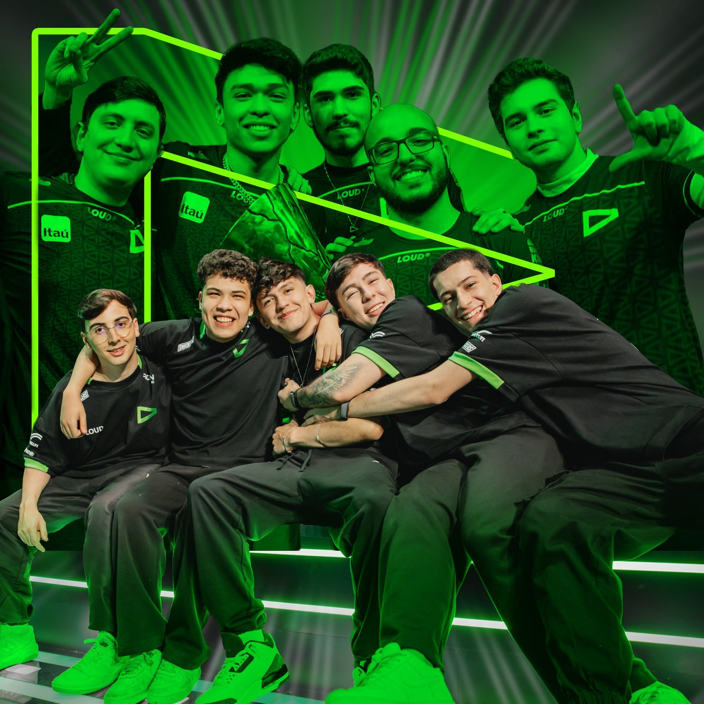
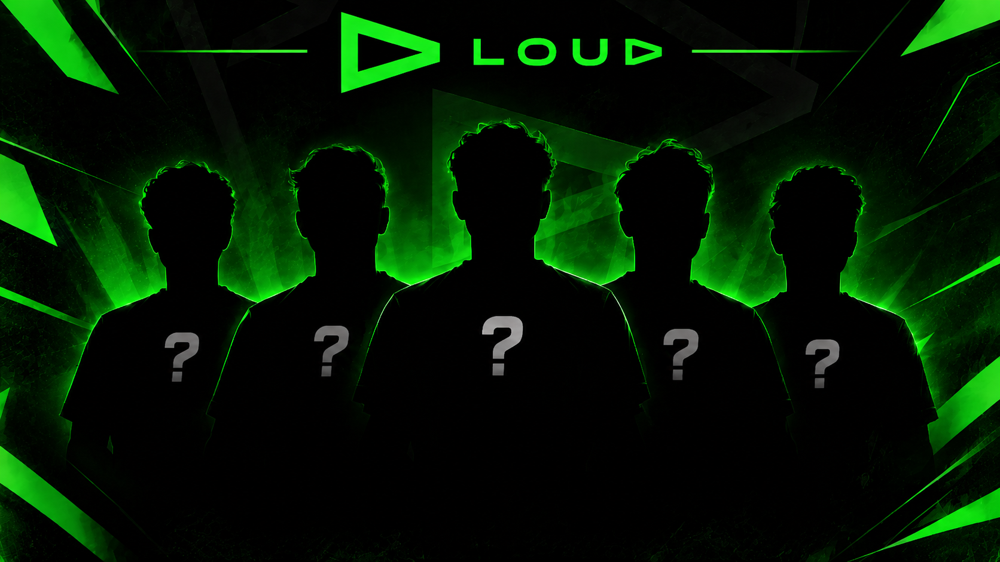
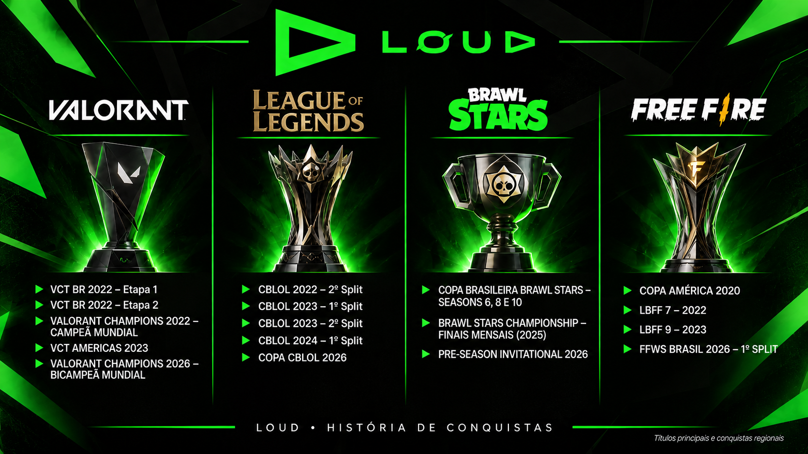

Trajetória
Do primeiro time de Free Fire, em 2019, até a volta ao topo do Valorant em 2026, passando pela chegada de cada modalidade e pelos anos difíceis.
Ler a trajetória →A LOUD nasceu em São Paulo, em 2019, como um time de Free Fire e hoje joga também Valorant, League of Legends e Brawl Stars. Este blog existe para organizar essa história: de onde o time veio, quem joga em cada modalidade e quais conquistas merecem ser lembradas.
Sou um fã fazendo este trabalho para a faculdade, então os fatos vêm de fontes públicas (listadas no rodapé) e as opiniões são nossas. Se algo estiver desatualizado, o elenco de e-sports muda rápido, e por isso cada página traz a data da última conferência.
Clique na imagem para abrir cada seção do blog.

Do primeiro time de Free Fire, em 2019, até a volta ao topo do Valorant em 2026, passando pela chegada de cada modalidade e pelos anos difíceis.
Ler a trajetória →

As taças em ordem cronológica e as partidas que a gente nunca esquece.
Ver os títulos →Eu escolhi o tema de E-sports para representar essa atividade, e resolvi trazer um time que eu acompanho nesse cenário, presente em diversas modalidades e carregando a essência brasileira em suas atuações. Eu já acompanho eles à aproximadamente 7 anos, desde que surgiu em 2019 na modalidade competitiva de Free Fire, um battle royale mobile que fez muito sucesso nos últimos anos. Atualmente, eu acompanho eles em quase todas as modalidades e tenho um carinho pela organização como torcedor.